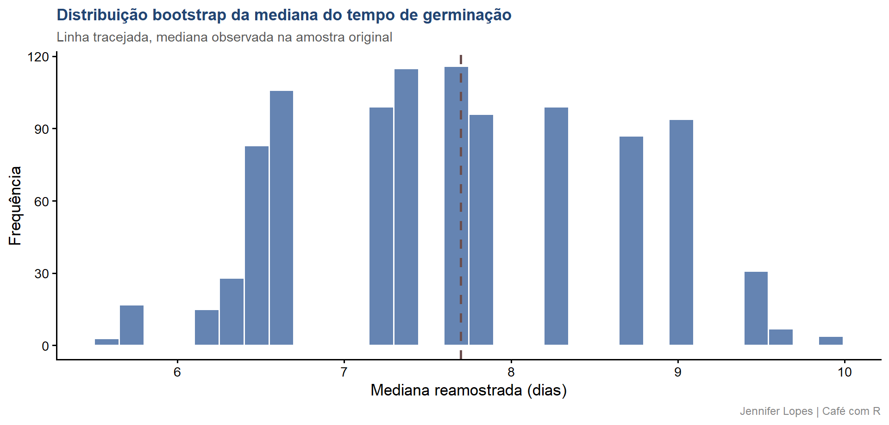

Aula 57. Bootstrap
Reamostrando quando a teoria não ajuda
Acompanhe o Café com R
Que cada gole desperte uma nova ideia.
Que cada script abra uma nova conversa.
Que o Café com R se torne um ponto de encontro nosso.
SITE OFICIAL > https://jenniferlopes.github.io/meu_site/
Objetivos da aula
- Entender o conceito de bootstrap e quando a teoria clássica não fornece uma solução
- Construir manualmente um intervalo de confiança por bootstrap não paramétrico
- Usar o pacote
bootpara automatizar o processo e obter métodos de intervalo mais refinados - Entender a diferença entre bootstrap paramétrico e não paramétrico
- Evitar os erros mais comuns na aplicação do bootstrap
Bloco 1
Conceito
O que é bootstrap, reamostragem com reposição
Bootstrap é um método de reamostragem que constrói a distribuição amostral de uma estatística a partir dos próprios dados observados, reamostrando com reposição repetidamente a partir da amostra original.
Cada reamostra tem o mesmo tamanho da amostra original, mas, por ser extraída com reposição, algumas observações aparecem mais de uma vez, e outras não aparecem.
A estatística de interesse é recalculada em cada reamostra, e a variabilidade dessas estatísticas recalculadas aproxima a variabilidade que a estatística teria se novas amostras fossem, de fato, coletadas da população.
Quando a teoria não ajuda
Contexto: o tempo até a germinação de 45 lotes de sementes tem distribuição assimétrica. O interesse recai sobre a mediana do tempo de germinação, e não existe uma fórmula fechada simples para o erro padrão da mediana, como existe para a média.
Estatísticas como a mediana, certos percentis, razões entre parâmetros, ou coeficientes de modelos não lineares complexos, frequentemente não têm uma distribuição amostral teórica conhecida em forma fechada. O bootstrap contorna essa limitação.
Os passos do algoritmo bootstrap
- Reamostrar, com reposição, um novo conjunto de dados do mesmo tamanho da amostra original
- Calcular a estatística de interesse nessa reamostra
- Repetir os passos 1 e 2 muitas vezes, tipicamente 1.000 a 10.000 repetições
- Usar a distribuição das estatísticas recalculadas para construir o intervalo de confiança
Bloco 2
Bootstrap Não Paramétrico na Prática
Código: reamostragem manual, mil reamostras
Output: distribuição bootstrap da mediana
# A tibble: 1 × 3
mediana_observada media_das_medianas erro_padrao_bootstrap
<dbl> <dbl> <dbl>
1 7.70 7.67 0.943- O desvio padrão das mil medianas reamostradas fornece uma estimativa do erro padrão da mediana, um valor que a teoria clássica não oferece em forma fechada para essa estatística.
Gráfico: histograma das medianas bootstrap

IC bootstrap por percentil, conceito e código
- O intervalo de confiança por percentil usa diretamente os percentis 2,5% e 97,5% da distribuição das estatísticas reamostradas como limites do intervalo de 95% de confiança.
Output: IC bootstrap
2.5% 97.5%
6.196 9.496 - O intervalo obtido é assimétrico em torno da mediana observada, refletindo a própria assimetria da distribuição do tempo de germinação, uma característica que um intervalo baseado na aproximação normal não capturaria adequadamente para esta estatística.
Bloco 3
Usando o Pacote boot
Código: boot() e boot.ci()
Output: resultado e interpretação
BOOTSTRAP CONFIDENCE INTERVAL CALCULATIONS
Based on 1000 bootstrap replicates
CALL :
boot.ci(boot.out = resultado_boot, type = c("perc", "bca"))
Intervals :
Level Percentile BCa
95% ( 5.775, 9.496 ) ( 5.694, 9.348 )
Calculations and Intervals on Original Scale
Some BCa intervals may be unstable- O pacote
bootautomatiza a reamostragem e oferece diretamente múltiplos métodos de intervalo, sem exigir a escrita manual do laço de reamostragem.
Diferentes métodos de IC bootstrap
| Método | Característica |
|---|---|
| Percentil | Usa diretamente os percentis da distribuição bootstrap, simples e intuitivo |
| BCa, bias-corrected and accelerated | Corrige viés e assimetria da distribuição bootstrap, geralmente mais preciso |
- O método BCa é, em geral, preferível ao percentil simples quando a distribuição bootstrap apresenta assimetria relevante, como costuma ocorrer com a mediana de dados assimétricos.
Bloco 4
Bootstrap Paramétrico
Conceito, diferença para o não paramétrico
No bootstrap não paramétrico, as reamostras são extraídas diretamente dos dados observados, com reposição, sem assumir nenhuma distribuição teórica subjacente.
No bootstrap paramétrico, primeiro se ajusta uma distribuição teórica aos dados, como a Gamma ajustada no
fitdistrplus, e então se geram novas amostras simuladas a partir dessa distribuição ajustada, em vez de reamostrar os dados originais.
Quando usar cada um
O bootstrap não paramétrico é preferível quando não há confiança suficiente em nenhum modelo de distribuição específico para os dados, deixando os próprios dados observados “falarem por si”.
O bootstrap paramétrico é preferível quando um modelo de distribuição já foi validado para os dados, e se deseja suavizar a estimativa, especialmente útil com tamanhos de amostra muito pequenos, em que o não paramétrico tem poucas observações distintas para reamostrar.
Bloco 5
Erros Comuns
Erro comum 1, número insuficiente de reamostragens
Usar um número pequeno de reamostragens, como 100, produz uma distribuição bootstrap instável, com estimativas de intervalo que variam consideravelmente a cada nova execução do código.
O padrão recomendado é de, no mínimo, 1.000 reamostragens para estimativas de erro padrão, e ainda mais para métodos de intervalo mais refinados, como o BCa.
Erro comum 2, ignorar a estrutura de dependência dos dados
Aplicar bootstrap simples, reamostrando observações individuais, quando os dados têm estrutura de dependência, como parcelas dentro de blocos ou medidas repetidas na mesma unidade, quebra essa estrutura e produz intervalos de confiança incorretos.
Nesses casos, o bootstrap deve reamostrar as unidades corretas, blocos inteiros ou indivíduos inteiros, preservando a estrutura de dependência original.
Erro comum 3, usar bootstrap para consertar uma amostra viesada
O bootstrap descreve a variabilidade da estatística dentro da amostra que se tem, ele não corrige um viés de seleção presente na coleta original dos dados.
Se a amostra não representa adequadamente a população de interesse, o bootstrap reproduzirá esse mesmo viés em todas as reamostras, sem exceção.
Resumo: bootstrap
| Elemento | Não paramétrico | Paramétrico |
|---|---|---|
| Fonte da reamostra | Dados observados, com reposição | Distribuição ajustada aos dados |
| Quando preferir | Sem modelo de distribuição validado | Modelo de distribuição já validado |
| Função no R | sample(), boot() |
Simulação a partir de fitdist() |
Obrigada!

Continue praticando e explorando.
Esta aula é parte do projeto Café com R. É open source. Use, compartilhe e adapte.
Siga o Café com R
Que cada gole desperte uma nova ideia.
Que cada script abra uma nova conversa.
Que o Café com R se torne um ponto de encontro nosso.
SITE OFICIAL > https://jenniferlopes.github.io/meu_site/

Jennifer Lopes | Café com R